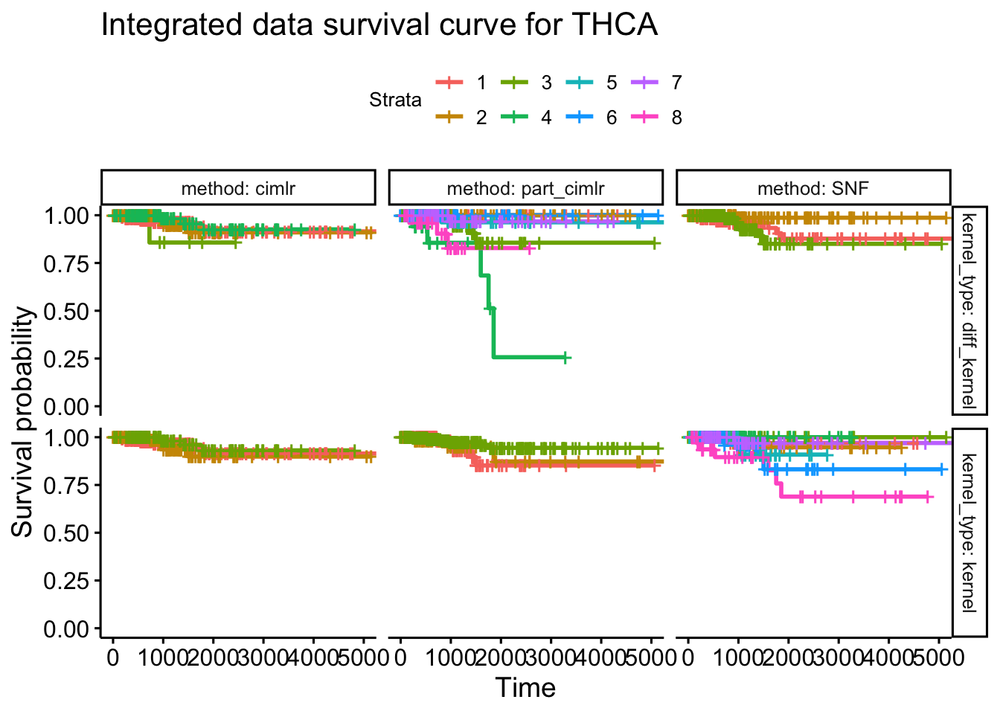

TCGA_pancancer_survival
yuqimiao
2022-11-05
Last updated: 2022-11-17
Checks: 7 0
Knit directory: DEP_SIMLR/
This reproducible R Markdown analysis was created with workflowr (version 1.7.0). The Checks tab describes the reproducibility checks that were applied when the results were created. The Past versions tab lists the development history.
Great! Since the R Markdown file has been committed to the Git repository, you know the exact version of the code that produced these results.
Great job! The global environment was empty. Objects defined in the global environment can affect the analysis in your R Markdown file in unknown ways. For reproduciblity it’s best to always run the code in an empty environment.
The command set.seed(20221003) was run prior to running
the code in the R Markdown file. Setting a seed ensures that any results
that rely on randomness, e.g. subsampling or permutations, are
reproducible.
Great job! Recording the operating system, R version, and package versions is critical for reproducibility.
Nice! There were no cached chunks for this analysis, so you can be confident that you successfully produced the results during this run.
Great job! Using relative paths to the files within your workflowr project makes it easier to run your code on other machines.
Great! You are using Git for version control. Tracking code development and connecting the code version to the results is critical for reproducibility.
The results in this page were generated with repository version 1030dfd. See the Past versions tab to see a history of the changes made to the R Markdown and HTML files.
Note that you need to be careful to ensure that all relevant files for
the analysis have been committed to Git prior to generating the results
(you can use wflow_publish or
wflow_git_commit). workflowr only checks the R Markdown
file, but you know if there are other scripts or data files that it
depends on. Below is the status of the Git repository when the results
were generated:
Ignored files:
Ignored: .DS_Store
Ignored: .Rhistory
Ignored: .Rproj.user/
Ignored: analysis/.DS_Store
Ignored: analysis/.Rhistory
Ignored: analysis/docs/figure/.DS_Store
Ignored: code/.DS_Store
Ignored: code/Code_collection/TCGA_survival_analysis/.DS_Store
Untracked files:
Untracked: MANIFEST.txt
Untracked: analysis/pancancer_plots/
Untracked: code/Code_collection/TCGA_survival_pan_cancer_pipeline/expression_data_download.R
Untracked: code/Code_collection/TCGA_survival_pan_cancer_pipeline/mutation_data_download.R
Untracked: code/Code_collection/TCGA_survival_pan_cancer_pipeline/res_explore.R
Untracked: data/pancancer_smaller_cluster_explore.Rdata
Unstaged changes:
Modified: code/Code_collection/TCGA_survival_pan_cancer_pipeline/Cancer_subtyping_pipeline.R
Modified: code/Code_collection/TCGA_survival_pan_cancer_pipeline/feature_score_calc.R
Modified: code/Code_collection/TCGA_survival_pan_cancer_pipeline/survival_pipeline.R
Modified: code/Code_collection/TCGA_survival_pan_cancer_pipeline/survival_res_analysis.R
Modified: code/functions/visualization_functions.R
Note that any generated files, e.g. HTML, png, CSS, etc., are not included in this status report because it is ok for generated content to have uncommitted changes.
These are the previous versions of the repository in which changes were
made to the R Markdown
(analysis/TCGA_pancancer_survival.rmd) and HTML
(docs/TCGA_pancancer_survival.html) files. If you’ve
configured a remote Git repository (see ?wflow_git_remote),
click on the hyperlinks in the table below to view the files as they
were in that past version.
| File | Version | Author | Date | Message |
|---|---|---|---|---|
| Rmd | 1030dfd | yuqimiao | 2022-11-17 | update |
| Rmd | 070ad3a | yuqimiao | 2022-11-08 | pancancer |
| html | 070ad3a | yuqimiao | 2022-11-08 | pancancer |
Introduction
This script summarize the results from the TCGA pancancer analysis and pick the cancers with good performance for visualization
Pancancer analysis results and store files log
Two strateges here are used for choosing the possible candidate cancers:
- using Peifeng’s criteria, we remove the samples within small clusters and re calulate the log rank pv of the remaining samples
Select BLCA and THCA
select_tib = surv_tib_check_minpv_remove_sample %>%
filter(cancer %in% c("BLCA","THCA")) %>%
arrange(cancer, kernel_type, method)
knitr::kable(select_tib)| cancer | kernel_type | method | data_type | c | surv_pv | sample_size | min_clust_size | true_c |
|---|---|---|---|---|---|---|---|---|
| BLCA | diff_kernel | cimlr | Integration | 6 | 0.0079538 | 386 | 12 | 6 |
| BLCA | diff_kernel | part_cimlr | Integration | 4 | 0.0000341 | 386 | 40 | 4 |
| BLCA | diff_kernel | SNF | Integration | 3 | 0.0008300 | 386 | 94 | 3 |
| BLCA | diff_kernel | spectral | mu | 2 | 0.0009483 | 386 | 112 | 2 |
| BLCA | kernel | cimlr | Integration | 8 | 0.0147850 | 359 | 19 | 4 |
| BLCA | kernel | part_cimlr | Integration | 3 | 0.0011477 | 386 | 64 | 3 |
| BLCA | kernel | SNF | Integration | 8 | 0.0042736 | 386 | 37 | 8 |
| BLCA | kernel | spectral | mu | 2 | 0.0006979 | 386 | 187 | 2 |
| THCA | diff_kernel | cimlr | Integration | 4 | 0.6627619 | 393 | 11 | 4 |
| THCA | diff_kernel | part_cimlr | Integration | 8 | 0.0000000 | 393 | 21 | 8 |
| THCA | diff_kernel | SNF | Integration | 3 | 0.0334647 | 393 | 125 | 3 |
| THCA | diff_kernel | spectral | mu | 3 | 0.0174310 | 393 | 60 | 3 |
| THCA | kernel | cimlr | Integration | 6 | 0.3185945 | 379 | 11 | 4 |
| THCA | kernel | part_cimlr | Integration | 3 | 0.2375456 | 393 | 57 | 3 |
| THCA | kernel | SNF | Integration | 8 | 0.0049814 | 393 | 35 | 8 |
| THCA | kernel | spectral | mu | 2 | 0.0124858 | 393 | 195 | 2 |
- remove c: for each c of each method, if the min clusters size <10, then we don’t regard c as a valid number and remove the clustering results of c for the method
## Cherry picking ----
surv_tib_all_remove_c = readRDS(paste(res_dir, "/", "all_surv_clust_remove_c.rds", sep = "")) # filter < 10 clusters, with normalization, new mutation data
surv_tib_check_remove_c = surv_tib_all_remove_c %>%
ungroup() %>%
mutate(sample_size = map_dbl(tib, function(tib) nrow(tib))) %>%
mutate(min_clust_size = map_dbl(tib, function(tib){
min(table(tib$cluster))
})) %>%
# filter(min_clust_size >= 10) %>%
# filter(data_type == "Integration") %>%
dplyr::select(-c(data,tib)) %>%
unnest(surv_pv) %>%
arrange(cancer,method, surv_pv)
surv_tib_check_minpv_remove_c = surv_tib_check_remove_c %>%
nest(data = -c(cancer, method, kernel_type,data_type)) %>%
mutate(data = map(data, function(dat){
dat = dat %>%
filter(surv_pv == min(surv_pv))
})) %>%
# filter(surv_pv<=0.05) %>%
unnest(data)
knitr::kable(surv_tib_check_minpv_remove_c)| cancer | kernel_type | data_type | method | c | surv_pv | sample_size | min_clust_size |
|---|---|---|---|---|---|---|---|
| BLCA | diff_kernel | Integration | cimlr | 6 | 0.0079538 | 386 | 12 |
| BLCA | kernel | Integration | cimlr | 5 | 0.0434303 | 386 | 11 |
| BLCA | diff_kernel | Integration | part_cimlr | 4 | 0.0000341 | 386 | 40 |
| BLCA | kernel | Integration | part_cimlr | 3 | 0.0011477 | 386 | 64 |
| BLCA | diff_kernel | Integration | SNF | 3 | 0.0008300 | 386 | 94 |
| BLCA | kernel | Integration | SNF | 8 | 0.0042736 | 386 | 37 |
| BLCA | kernel | mu | spectral | 2 | 0.0006979 | 386 | 187 |
| BLCA | diff_kernel | mu | spectral | 2 | 0.0009483 | 386 | 112 |
| BLCA | kernel | expr | spectral | 2 | 0.0097378 | 386 | 166 |
| BLCA | diff_kernel | expr | spectral | 2 | 0.0111582 | 386 | 182 |
| BLCA | kernel | me | spectral | 2 | 0.1472965 | 386 | 172 |
| BLCA | diff_kernel | me | spectral | 2 | 0.1876493 | 386 | 181 |
| BRCA | kernel | Integration | cimlr | 5 | 0.1684992 | 496 | 11 |
| BRCA | diff_kernel | Integration | cimlr | 3 | 0.3877017 | 496 | 158 |
| BRCA | kernel | Integration | part_cimlr | 5 | 0.2600868 | 496 | 26 |
| BRCA | diff_kernel | Integration | part_cimlr | 6 | 0.6704446 | 496 | 51 |
| BRCA | diff_kernel | Integration | SNF | 6 | 0.0438140 | 496 | 60 |
| BRCA | kernel | Integration | SNF | 7 | 0.1567684 | 496 | 49 |
| BRCA | kernel | me | spectral | 2 | 0.0111789 | 496 | 223 |
| BRCA | diff_kernel | me | spectral | 2 | 0.0412736 | 496 | 239 |
| BRCA | diff_kernel | mu | spectral | 2 | 0.1855685 | 496 | 120 |
| BRCA | kernel | expr | spectral | 2 | 0.4380489 | 496 | 164 |
| BRCA | kernel | mu | spectral | 2 | 0.4501700 | 496 | 172 |
| BRCA | diff_kernel | expr | spectral | 2 | 0.5631562 | 496 | 167 |
| CESC | kernel | Integration | cimlr | 3 | 0.1991560 | 176 | 10 |
| CESC | kernel | Integration | part_cimlr | 3 | 0.2222594 | 176 | 13 |
| CESC | diff_kernel | Integration | part_cimlr | 5 | 0.2319179 | 176 | 13 |
| CESC | kernel | Integration | SNF | 4 | 0.0881312 | 176 | 31 |
| CESC | diff_kernel | Integration | SNF | 3 | 0.2192399 | 176 | 33 |
| CESC | kernel | mu | spectral | 2 | 0.0214721 | 176 | 48 |
| CESC | diff_kernel | mu | spectral | 2 | 0.0551204 | 176 | 33 |
| CESC | diff_kernel | expr | spectral | 2 | 0.2954307 | 176 | 75 |
| CESC | kernel | expr | spectral | 2 | 0.5167299 | 176 | 82 |
| CESC | kernel | me | spectral | 2 | 0.6809210 | 176 | 73 |
| CESC | diff_kernel | me | spectral | 2 | 0.6809210 | 176 | 73 |
| COAD | kernel | Integration | cimlr | 3 | 0.7487870 | 198 | 13 |
| COAD | diff_kernel | Integration | cimlr | 3 | 0.9504605 | 198 | 14 |
| COAD | diff_kernel | Integration | part_cimlr | 3 | 0.3472904 | 198 | 33 |
| COAD | kernel | Integration | part_cimlr | 5 | 0.5794777 | 198 | 24 |
| COAD | diff_kernel | Integration | SNF | 6 | 0.0876254 | 198 | 17 |
| COAD | kernel | Integration | SNF | 7 | 0.3363679 | 198 | 15 |
| COAD | diff_kernel | me | spectral | 3 | 0.0613766 | 198 | 56 |
| COAD | kernel | me | spectral | 3 | 0.1709652 | 198 | 56 |
| COAD | kernel | expr | spectral | 2 | 0.3629109 | 198 | 63 |
| COAD | kernel | mu | spectral | 2 | 0.7295917 | 198 | 40 |
| COAD | diff_kernel | mu | spectral | 2 | 0.7587384 | 198 | 39 |
| COAD | diff_kernel | expr | spectral | 2 | 0.7891889 | 198 | 68 |
| KIRC | kernel | Integration | cimlr | 3 | 0.0003930 | 207 | 26 |
| KIRC | kernel | Integration | part_cimlr | 6 | 0.0003795 | 207 | 15 |
| KIRC | diff_kernel | Integration | part_cimlr | 6 | 0.0013952 | 207 | 20 |
| KIRC | kernel | Integration | SNF | 6 | 0.0000041 | 207 | 22 |
| KIRC | diff_kernel | Integration | SNF | 3 | 0.0003055 | 207 | 45 |
| KIRC | diff_kernel | expr | spectral | 2 | 0.0000223 | 207 | 93 |
| KIRC | kernel | expr | spectral | 2 | 0.0000332 | 207 | 95 |
| KIRC | diff_kernel | me | spectral | 2 | 0.0006033 | 207 | 81 |
| KIRC | kernel | me | spectral | 2 | 0.0007549 | 207 | 76 |
| KIRC | kernel | mu | spectral | 2 | 0.0432710 | 207 | 81 |
| KIRC | diff_kernel | mu | spectral | 2 | 0.0472607 | 207 | 80 |
| KIRP | diff_kernel | Integration | part_cimlr | 4 | 0.0000000 | 148 | 15 |
| KIRP | kernel | Integration | part_cimlr | 4 | 0.0000000 | 148 | 12 |
| KIRP | diff_kernel | me | spectral | 2 | 0.0000000 | 148 | 48 |
| KIRP | kernel | me | spectral | 2 | 0.0000000 | 148 | 49 |
| KIRP | diff_kernel | expr | spectral | 2 | 0.0374095 | 148 | 58 |
| KIRP | kernel | expr | spectral | 2 | 0.0520874 | 148 | 59 |
| KIRP | diff_kernel | mu | spectral | 2 | 0.1730944 | 148 | 63 |
| KIRP | kernel | mu | spectral | 2 | 0.1872501 | 148 | 64 |
| LIHC | kernel | Integration | cimlr | 3 | 0.8097889 | 191 | 16 |
| LIHC | diff_kernel | Integration | part_cimlr | 3 | 0.4764677 | 191 | 56 |
| LIHC | kernel | Integration | part_cimlr | 3 | 0.5707850 | 191 | 51 |
| LIHC | kernel | Integration | SNF | 7 | 0.1475693 | 191 | 15 |
| LIHC | diff_kernel | Integration | SNF | 6 | 0.2492566 | 191 | 12 |
| LIHC | kernel | expr | spectral | 2 | 0.2405801 | 191 | 80 |
| LIHC | diff_kernel | expr | spectral | 2 | 0.2517766 | 191 | 79 |
| LIHC | diff_kernel | mu | spectral | 2 | 0.2941819 | 191 | 54 |
| LIHC | kernel | mu | spectral | 2 | 0.4077973 | 191 | 74 |
| LIHC | kernel | me | spectral | 2 | 0.4319981 | 191 | 94 |
| LIHC | diff_kernel | me | spectral | 2 | 0.6071940 | 191 | 94 |
| LUAD | diff_kernel | Integration | cimlr | 4 | 0.0000022 | 418 | 70 |
| LUAD | kernel | Integration | cimlr | 3 | 0.0004980 | 418 | 131 |
| LUAD | kernel | Integration | part_cimlr | 7 | 0.0000006 | 418 | 47 |
| LUAD | diff_kernel | Integration | part_cimlr | 6 | 0.0000274 | 418 | 58 |
| LUAD | kernel | Integration | SNF | 6 | 0.0000027 | 418 | 55 |
| LUAD | diff_kernel | Integration | SNF | 6 | 0.0010805 | 418 | 58 |
| LUAD | diff_kernel | expr | spectral | 2 | 0.0001337 | 418 | 175 |
| LUAD | kernel | expr | spectral | 3 | 0.0018826 | 418 | 102 |
| LUAD | kernel | me | spectral | 2 | 0.3524091 | 418 | 187 |
| LUAD | diff_kernel | me | spectral | 2 | 0.3861952 | 418 | 176 |
| LUAD | diff_kernel | mu | spectral | 2 | 0.6457204 | 418 | 179 |
| LUAD | kernel | mu | spectral | 2 | 0.6859333 | 418 | 205 |
| PCPG | diff_kernel | Integration | cimlr | 3 | 0.0145708 | 176 | 12 |
| PCPG | kernel | Integration | part_cimlr | 5 | 0.3512743 | 176 | 22 |
| PCPG | diff_kernel | Integration | part_cimlr | 6 | 0.3929684 | 176 | 20 |
| PCPG | kernel | Integration | SNF | 5 | 0.0000053 | 176 | 16 |
| PCPG | diff_kernel | Integration | SNF | 4 | 0.3225076 | 176 | 25 |
| PCPG | kernel | mu | spectral | 2 | 0.1250173 | 176 | 84 |
| PCPG | diff_kernel | mu | spectral | 2 | 0.1616079 | 176 | 80 |
| PCPG | diff_kernel | me | spectral | 2 | 0.6443480 | 176 | 84 |
| PCPG | kernel | expr | spectral | 2 | 0.6567756 | 176 | 81 |
| PCPG | diff_kernel | expr | spectral | 2 | 0.6823688 | 176 | 80 |
| PCPG | kernel | me | spectral | 2 | 0.8817773 | 176 | 79 |
| PRAD | diff_kernel | Integration | cimlr | 3 | 0.5210545 | 328 | 40 |
| PRAD | kernel | Integration | cimlr | 3 | 0.5314392 | 328 | 37 |
| PRAD | diff_kernel | Integration | part_cimlr | 3 | 0.1539686 | 328 | 99 |
| PRAD | kernel | Integration | part_cimlr | 3 | 0.5185301 | 328 | 76 |
| PRAD | diff_kernel | Integration | SNF | 3 | 0.1256097 | 328 | 101 |
| PRAD | kernel | Integration | SNF | 3 | 0.2222851 | 328 | 107 |
| PRAD | kernel | mu | spectral | 2 | 0.0423666 | 328 | 134 |
| PRAD | diff_kernel | mu | spectral | 2 | 0.1771742 | 328 | 141 |
| PRAD | diff_kernel | expr | spectral | 2 | 0.5500316 | 328 | 153 |
| PRAD | kernel | expr | spectral | 2 | 0.6222428 | 328 | 143 |
| PRAD | kernel | me | spectral | 2 | 0.7487794 | 328 | 133 |
| PRAD | diff_kernel | me | spectral | 2 | 0.7599579 | 328 | 133 |
| SARC | kernel | Integration | cimlr | 3 | 0.6171194 | 221 | 25 |
| SARC | kernel | Integration | SNF | 4 | 0.0016501 | 221 | 41 |
| SARC | diff_kernel | Integration | SNF | 6 | 0.0029527 | 221 | 13 |
| SARC | diff_kernel | me | spectral | 2 | 0.0005911 | 221 | 99 |
| SARC | kernel | me | spectral | 2 | 0.0013030 | 221 | 98 |
| SARC | diff_kernel | mu | spectral | 2 | 0.1551959 | 221 | 59 |
| SARC | kernel | expr | spectral | 2 | 0.4495668 | 221 | 75 |
| SARC | diff_kernel | expr | spectral | 2 | 0.4530267 | 221 | 76 |
| SARC | kernel | mu | spectral | 2 | 0.8506840 | 221 | 85 |
| STAD | kernel | Integration | cimlr | 3 | 0.0078590 | 226 | 10 |
| STAD | diff_kernel | Integration | cimlr | 3 | 0.0103953 | 226 | 13 |
| STAD | diff_kernel | Integration | part_cimlr | 6 | 0.0042613 | 226 | 20 |
| STAD | kernel | Integration | part_cimlr | 3 | 0.0409760 | 226 | 54 |
| STAD | diff_kernel | Integration | SNF | 6 | 0.0225705 | 226 | 28 |
| STAD | kernel | Integration | SNF | 3 | 0.0346535 | 226 | 70 |
| STAD | diff_kernel | mu | spectral | 2 | 0.0020340 | 226 | 56 |
| STAD | kernel | mu | spectral | 2 | 0.0043765 | 226 | 60 |
| STAD | kernel | me | spectral | 3 | 0.0310619 | 226 | 71 |
| STAD | diff_kernel | me | spectral | 3 | 0.0789786 | 226 | 69 |
| STAD | kernel | expr | spectral | 2 | 0.1343780 | 226 | 67 |
| STAD | diff_kernel | expr | spectral | 2 | 0.2051137 | 226 | 66 |
| THCA | diff_kernel | Integration | cimlr | 4 | 0.6627619 | 393 | 11 |
| THCA | kernel | Integration | cimlr | 3 | 0.6679215 | 393 | 105 |
| THCA | diff_kernel | Integration | part_cimlr | 8 | 0.0000000 | 393 | 21 |
| THCA | kernel | Integration | part_cimlr | 3 | 0.2375456 | 393 | 57 |
| THCA | kernel | Integration | SNF | 8 | 0.0049814 | 393 | 35 |
| THCA | diff_kernel | Integration | SNF | 3 | 0.0334647 | 393 | 125 |
| THCA | kernel | mu | spectral | 2 | 0.0124858 | 393 | 195 |
| THCA | kernel | me | spectral | 3 | 0.0136391 | 393 | 87 |
| THCA | diff_kernel | mu | spectral | 3 | 0.0174310 | 393 | 60 |
| THCA | diff_kernel | me | spectral | 3 | 0.0434040 | 393 | 97 |
| THCA | kernel | expr | spectral | 2 | 0.5653252 | 393 | 144 |
| THCA | diff_kernel | expr | spectral | 2 | 0.8890871 | 393 | 162 |
Select BLCA, STAD and THCA
select_tib = surv_tib_check_minpv_remove_c %>%
filter(cancer %in% c("BLCA","STAD","THCA")) %>%
arrange(cancer, kernel_type, method)
knitr::kable(select_tib, digits = 32)| cancer | kernel_type | data_type | method | c | surv_pv | sample_size | min_clust_size |
|---|---|---|---|---|---|---|---|
| BLCA | diff_kernel | Integration | cimlr | 6 | 7.953760e-03 | 386 | 12 |
| BLCA | diff_kernel | Integration | part_cimlr | 4 | 3.408908e-05 | 386 | 40 |
| BLCA | diff_kernel | Integration | SNF | 3 | 8.300319e-04 | 386 | 94 |
| BLCA | diff_kernel | mu | spectral | 2 | 9.482885e-04 | 386 | 112 |
| BLCA | diff_kernel | expr | spectral | 2 | 1.115816e-02 | 386 | 182 |
| BLCA | diff_kernel | me | spectral | 2 | 1.876493e-01 | 386 | 181 |
| BLCA | kernel | Integration | cimlr | 5 | 4.343034e-02 | 386 | 11 |
| BLCA | kernel | Integration | part_cimlr | 3 | 1.147678e-03 | 386 | 64 |
| BLCA | kernel | Integration | SNF | 8 | 4.273615e-03 | 386 | 37 |
| BLCA | kernel | mu | spectral | 2 | 6.978511e-04 | 386 | 187 |
| BLCA | kernel | expr | spectral | 2 | 9.737839e-03 | 386 | 166 |
| BLCA | kernel | me | spectral | 2 | 1.472965e-01 | 386 | 172 |
| STAD | diff_kernel | Integration | cimlr | 3 | 1.039526e-02 | 226 | 13 |
| STAD | diff_kernel | Integration | part_cimlr | 6 | 4.261311e-03 | 226 | 20 |
| STAD | diff_kernel | Integration | SNF | 6 | 2.257051e-02 | 226 | 28 |
| STAD | diff_kernel | mu | spectral | 2 | 2.033965e-03 | 226 | 56 |
| STAD | diff_kernel | me | spectral | 3 | 7.897863e-02 | 226 | 69 |
| STAD | diff_kernel | expr | spectral | 2 | 2.051137e-01 | 226 | 66 |
| STAD | kernel | Integration | cimlr | 3 | 7.858983e-03 | 226 | 10 |
| STAD | kernel | Integration | part_cimlr | 3 | 4.097604e-02 | 226 | 54 |
| STAD | kernel | Integration | SNF | 3 | 3.465353e-02 | 226 | 70 |
| STAD | kernel | mu | spectral | 2 | 4.376473e-03 | 226 | 60 |
| STAD | kernel | me | spectral | 3 | 3.106194e-02 | 226 | 71 |
| STAD | kernel | expr | spectral | 2 | 1.343780e-01 | 226 | 67 |
| THCA | diff_kernel | Integration | cimlr | 4 | 6.627619e-01 | 393 | 11 |
| THCA | diff_kernel | Integration | part_cimlr | 8 | 9.558449e-10 | 393 | 21 |
| THCA | diff_kernel | Integration | SNF | 3 | 3.346471e-02 | 393 | 125 |
| THCA | diff_kernel | mu | spectral | 3 | 1.743099e-02 | 393 | 60 |
| THCA | diff_kernel | me | spectral | 3 | 4.340404e-02 | 393 | 97 |
| THCA | diff_kernel | expr | spectral | 2 | 8.890871e-01 | 393 | 162 |
| THCA | kernel | Integration | cimlr | 3 | 6.679215e-01 | 393 | 105 |
| THCA | kernel | Integration | part_cimlr | 3 | 2.375456e-01 | 393 | 57 |
| THCA | kernel | Integration | SNF | 8 | 4.981444e-03 | 393 | 35 |
| THCA | kernel | mu | spectral | 2 | 1.248577e-02 | 393 | 195 |
| THCA | kernel | me | spectral | 3 | 1.363914e-02 | 393 | 87 |
| THCA | kernel | expr | spectral | 2 | 5.653252e-01 | 393 | 144 |
Visualization
survival curv
BLCA
check_tib = select_tib %>%
filter(cancer == "BLCA")
knitr::kable(check_tib)| cancer | kernel_type | data_type | method | c | surv_pv | sample_size | min_clust_size |
|---|---|---|---|---|---|---|---|
| BLCA | diff_kernel | Integration | cimlr | 6 | 0.0079538 | 386 | 12 |
| BLCA | diff_kernel | Integration | part_cimlr | 4 | 0.0000341 | 386 | 40 |
| BLCA | diff_kernel | Integration | SNF | 3 | 0.0008300 | 386 | 94 |
| BLCA | diff_kernel | mu | spectral | 2 | 0.0009483 | 386 | 112 |
| BLCA | diff_kernel | expr | spectral | 2 | 0.0111582 | 386 | 182 |
| BLCA | diff_kernel | me | spectral | 2 | 0.1876493 | 386 | 181 |
| BLCA | kernel | Integration | cimlr | 5 | 0.0434303 | 386 | 11 |
| BLCA | kernel | Integration | part_cimlr | 3 | 0.0011477 | 386 | 64 |
| BLCA | kernel | Integration | SNF | 8 | 0.0042736 | 386 | 37 |
| BLCA | kernel | mu | spectral | 2 | 0.0006979 | 386 | 187 |
| BLCA | kernel | expr | spectral | 2 | 0.0097378 | 386 | 166 |
| BLCA | kernel | me | spectral | 2 | 0.1472965 | 386 | 172 |
surv_tib = surv_tib_all_remove_c %>%
filter(cancer == "BLCA") %>%
dplyr::select(-data) %>%
unnest(tib)
# single:
ggsurvplot_facet(survfit(Surv(days_to_death, censoring)~cluster,
data = surv_tib),
data = subset(surv_tib, data_type != "Integration"),
facet.by = c("kernel_type", "data_type"))+
ggtitle(paste("Single data survival curve for BLCA"))
| Version | Author | Date |
|---|---|---|
| 070ad3a | yuqimiao | 2022-11-08 |
surv_tib_integ = surv_tib %>%
filter(data_type == "Integration") %>%
group_by(cancer, kernel_type, method) %>%
unnest(surv_pv) %>%
filter(surv_pv == min(surv_pv)) %>%
ungroup()
# Integrated:
ggsurvplot_facet(survfit(Surv(days_to_death, censoring)~cluster,
data = surv_tib),
data = surv_tib_integ,
facet.by = c("kernel_type", "method"))+
ggtitle(paste("Integrated data survival curve for BLCA"))expr_cl = surv_tib %>%
filter(kernel_type == "diff_kernel" & data_type == "expr") %>% pull(cluster)
me_cl = surv_tib %>%
filter(kernel_type == "diff_kernel" & data_type == "me") %>% pull(cluster)
mu_cl = surv_tib %>%
filter(kernel_type == "diff_kernel" & data_type == "mu") %>% pull(cluster)
diff_part_cl = surv_tib %>%
filter(kernel_type == "diff_kernel" & method == "part_cimlr" & c == 4) %>% pull(cluster)
cluster_tib = tibble(expr_cl = expr_cl,me_cl = me_cl, mu_cl = mu_cl,diff_part_cl = diff_part_cl)
cluster_tib %>%
group_by(mu_cl, diff_part_cl) %>%
summarise(n = n()) %>%
mutate(freq = n/sum(n))`summarise()` has grouped output by 'mu_cl'. You can override using the
`.groups` argument.# A tibble: 7 × 4
# Groups: mu_cl [2]
mu_cl diff_part_cl n freq
<fct> <fct> <int> <dbl>
1 1 1 142 0.518
2 1 2 98 0.358
3 1 4 34 0.124
4 2 1 21 0.188
5 2 2 14 0.125
6 2 3 71 0.634
7 2 4 6 0.0536cluster_tib %>%
group_by(me_cl, diff_part_cl) %>%
summarise(n = n()) %>%
mutate(freq = n/sum(n))`summarise()` has grouped output by 'me_cl'. You can override using the
`.groups` argument.# A tibble: 7 × 4
# Groups: me_cl [2]
me_cl diff_part_cl n freq
<fct> <fct> <int> <dbl>
1 1 1 16 0.0884
2 1 2 112 0.619
3 1 3 40 0.221
4 1 4 13 0.0718
5 2 1 147 0.717
6 2 3 31 0.151
7 2 4 27 0.132 cluster_tib %>%
group_by(expr_cl, diff_part_cl) %>%
summarise(n = n()) %>%
mutate(freq = n/sum(n))`summarise()` has grouped output by 'expr_cl'. You can override using the
`.groups` argument.# A tibble: 8 × 4
# Groups: expr_cl [2]
expr_cl diff_part_cl n freq
<fct> <fct> <int> <dbl>
1 1 1 33 0.181
2 1 2 80 0.440
3 1 3 31 0.170
4 1 4 38 0.209
5 2 1 130 0.637
6 2 2 32 0.157
7 2 3 40 0.196
8 2 4 2 0.00980STAD
check_tib = select_tib %>%
filter(cancer == "STAD")
knitr::kable(check_tib)| cancer | kernel_type | data_type | method | c | surv_pv | sample_size | min_clust_size |
|---|---|---|---|---|---|---|---|
| STAD | diff_kernel | Integration | cimlr | 3 | 0.0103953 | 226 | 13 |
| STAD | diff_kernel | Integration | part_cimlr | 6 | 0.0042613 | 226 | 20 |
| STAD | diff_kernel | Integration | SNF | 6 | 0.0225705 | 226 | 28 |
| STAD | diff_kernel | mu | spectral | 2 | 0.0020340 | 226 | 56 |
| STAD | diff_kernel | me | spectral | 3 | 0.0789786 | 226 | 69 |
| STAD | diff_kernel | expr | spectral | 2 | 0.2051137 | 226 | 66 |
| STAD | kernel | Integration | cimlr | 3 | 0.0078590 | 226 | 10 |
| STAD | kernel | Integration | part_cimlr | 3 | 0.0409760 | 226 | 54 |
| STAD | kernel | Integration | SNF | 3 | 0.0346535 | 226 | 70 |
| STAD | kernel | mu | spectral | 2 | 0.0043765 | 226 | 60 |
| STAD | kernel | me | spectral | 3 | 0.0310619 | 226 | 71 |
| STAD | kernel | expr | spectral | 2 | 0.1343780 | 226 | 67 |
surv_tib = surv_tib_all_remove_c %>%
filter(cancer == "STAD") %>%
dplyr::select(-data) %>%
unnest(tib)
# single:
ggsurvplot_facet(survfit(Surv(days_to_death, censoring)~cluster,
data = surv_tib),
data = subset(surv_tib, data_type != "Integration"),
facet.by = c("kernel_type", "data_type"))+
ggtitle(paste("Single data survival curve for STAD"))surv_tib_integ = surv_tib %>%
filter(data_type == "Integration") %>%
group_by(cancer, kernel_type, method) %>%
unnest(surv_pv) %>%
filter(surv_pv == min(surv_pv)) %>%
ungroup()
# Integrated:
ggsurvplot_facet(survfit(Surv(days_to_death, censoring)~cluster,
data = surv_tib),
data = surv_tib_integ,
facet.by = c("kernel_type", "method"))+
ggtitle(paste("Integrated data survival curve for STAD"))THCA
check_tib = select_tib %>%
filter(cancer == "THCA")
knitr::kable(check_tib)| cancer | kernel_type | data_type | method | c | surv_pv | sample_size | min_clust_size |
|---|---|---|---|---|---|---|---|
| THCA | diff_kernel | Integration | cimlr | 4 | 0.6627619 | 393 | 11 |
| THCA | diff_kernel | Integration | part_cimlr | 8 | 0.0000000 | 393 | 21 |
| THCA | diff_kernel | Integration | SNF | 3 | 0.0334647 | 393 | 125 |
| THCA | diff_kernel | mu | spectral | 3 | 0.0174310 | 393 | 60 |
| THCA | diff_kernel | me | spectral | 3 | 0.0434040 | 393 | 97 |
| THCA | diff_kernel | expr | spectral | 2 | 0.8890871 | 393 | 162 |
| THCA | kernel | Integration | cimlr | 3 | 0.6679215 | 393 | 105 |
| THCA | kernel | Integration | part_cimlr | 3 | 0.2375456 | 393 | 57 |
| THCA | kernel | Integration | SNF | 8 | 0.0049814 | 393 | 35 |
| THCA | kernel | mu | spectral | 2 | 0.0124858 | 393 | 195 |
| THCA | kernel | me | spectral | 3 | 0.0136391 | 393 | 87 |
| THCA | kernel | expr | spectral | 2 | 0.5653252 | 393 | 144 |
surv_tib = surv_tib_all_remove_c %>%
filter(cancer == "THCA") %>%
dplyr::select(-data) %>%
unnest(tib)
# single:
ggsurvplot_facet(survfit(Surv(days_to_death, censoring)~cluster,
data = surv_tib),
data = subset(surv_tib, data_type != "Integration"),
facet.by = c("kernel_type", "data_type"))+
ggtitle(paste("Single data survival curve for THCA"))
| Version | Author | Date |
|---|---|---|
| 070ad3a | yuqimiao | 2022-11-08 |
surv_tib_integ = surv_tib %>%
filter(data_type == "Integration") %>%
group_by(cancer, kernel_type, method) %>%
unnest(surv_pv) %>%
filter(surv_pv == min(surv_pv)) %>%
ungroup()
# Integrated:
ggsurvplot_facet(survfit(Surv(days_to_death, censoring)~cluster,
data = surv_tib),
data = surv_tib_integ,
facet.by = c("kernel_type", "method"))+
ggtitle(paste("Integrated data survival curve for THCA"))
| Version | Author | Date |
|---|---|---|
| 070ad3a | yuqimiao | 2022-11-08 |
Feature selection for visualization
Using Laplacian score and robust rank aggregation for feature picking;
i.e., we choose the features consistent with the similarity matrix learned from diff-part-cimlr to visualize.
In detail,the laplacian score is calculated as \(\frac{f^TSf}{f^Tf}\), the larger the score, the more consistent feature f is to the similarity measures in S; Then we use robust rank aggregation for feature ranking. Specifically, we use 100 80% BS samples to get the feature score vectors, and then we rank within each BS samples, composing of a \(100\times D_s\) feature rank matrix, with ith column corresponding to the rank of feature i within 100 BS samples, denoted as \(r_i\); For \(r_i\), we further rank the 100 BS samples to get \(r_{i,(1)}\leq r_{i,(2)} \leq \cdots \leq r_{i,(100)}\), and for each order statistics, we can calculate the probability of the order stat under the uniform null distribution is smaller than the observed kth order statistics, and choose the smallest probability as a score of the gene. The smaller the score, the more likely the gene is informative, or to say having a non-null distribution of the rank among the BS samples;
# pick_dir = "/Volumes/sw2206/yuqi/data_20220308/pancancer_output/alpha_0.8_eigengap_upMu_nonorm/pick"
# path_check_tib = readRDS(paste(pick_dir, "/path_check_tib.rds",sep = ""))# # plot_dir = "./analysis/docs/figure/pancancer_plots"
# # for(i in 1:nrow(path_check_tib)){
# # cancer_cur = path_check_tib$cancer[[i]]
# # tb = knitr::kable(path_check_tib$check_tib[[i]], digits = 32)
# # print(tb)
# # g_ls = readRDS(path_check_tib$plot_path[[i]])
# # plot_dir_cur = plot_dir
# # if(!file.exists(plot_dir_cur)){dir.create(plot_dir_cur)}
# # "surv_plot"
# print(g_ls$g_sing_surv)
# # ggsave(plot = g_ls$g_sing_surv, filename = paste(plot_dir_cur, "/", cancer_cur, "_sing_surv.png", sep = ""),
# # width = 10, height = 8)
# print(g_ls$g_integ_surv)
# # ggsave(plot = g_ls$g_integ_surv, filename = paste(plot_dir_cur, "/", cancer_cur, "_integ_surv.png", sep = ""),
# # width = 10, height = 8)
# # "heatmap for gene expr"
# print(g_ls$g_expr)
# # ggsave(plot = g_ls$g_expr, filename = paste(plot_dir_cur, "/", cancer_cur, "_expr_heat.png", sep = ""),
# # width = 12, height = 8)
# # "heatmap for methylation"
# print(g_ls$g_me)
# # ggsave(plot = g_ls$g_me, filename = paste(plot_dir_cur, "/", cancer_cur, "_me_heat.png", sep = ""),
# # width = 12, height = 8)
# # "heatmap for mutation"
# print(g_ls$g_mu)
# # ggsave(plot = g_ls$g_mu, filename = paste(plot_dir_cur, "/", cancer_cur, "_mu_heat.png", sep = ""),
# # width = 12, height = 8)
#
# }Focused on the STAD/LUAD/KIRP/PRAD;
Write up paragraphs
We perform cancer subtyping analysis on four types of cancer: LUAD, STAD, KIRP and PRAD. Three tyoes of omics data for each cancer types are considered: gene expression data, DNA methylation data and the somtic mutation data. [Add] All tumor sampels are donwloaded from the TCGA websites and the initial sample size are
All 3 data types pass the outlier removal and imputation steps. Specifically, samples with more than 30% missings among featuers for any dat types are first removed as outlier samples, then the features with more than 30% missing are removed. For the remaining missins in the gene expression and the methylation data, we use K-nearest-neighbor imputation to complete the data matrices. For DNA methylation,we further removed CpG sites on sex chromosomes and CpG sites overlapping with known single nucleotide polymorphisms and also corrected type I/II probe bias using wateRmelon (Pidsley et al., 2013).
To pick the number of clusters for each data type, we focus on the following criteria: Firstly, the number of each clusters should be larger than 10, then we pick the number of clusters which gives the most significant survival differences
Potential problems in analysis
- No normalization makes better performance
the gene expression data is not normalized; Very large counts in the data, presumably preprocess steps need to be done;
Our method will give small cluster when there is extreme block in the similarity matrix, which is tend to show out when performing normalization
# See details in "../code/Code_collection/TCGA_survival_pan_cancer_pipeline/res_explore.R"
load("data/pancancer_smaller_cluster_explore.Rdata")
table(res_part$cluster)
1 2 3 4
142 186 50 8 table(res_cim$cluster)
1 2 3 4
120 120 71 75 table(res_snf$cluster)
1 2 3 4
89 68 136 93 heatmap_gg(kernel[sort(res_part$cluster, index.return = T)$ix,sort(res_part$cluster, index.return = T)$ix],"dist sub aligned by cluster ind")
| Version | Author | Date |
|---|---|---|
| 070ad3a | yuqimiao | 2022-11-08 |
heatmap_gg(kernel_st[sort(res_part$cluster, index.return = T)$ix,sort(res_part$cluster, index.return = T)$ix],"standard dist sub aligned by cluster ind")res_dir = "/Volumes/sw2206/yuqi/data_20220308/pancancer_output/alpha_0.8_eigengap_upMu" # new mutation data, with normalization
surv_tib_all = readRDS(paste(res_dir, "/", "all_surv_clust_tib.rds", sep = ""))
surv_tib_check = surv_tib_all %>%
mutate(sample_size = map_dbl(tib, function(tib) nrow(tib))) %>%
mutate(min_clust_size = map_dbl(tib, function(tib){
min(table(tib$cluster))
})) %>%
# filter(min_clust_size > 10) %>%
filter(data_type == "Integration") %>%
dplyr::select(-c(data,tib)) %>%
filter(surv_pv<=0.05) %>%
unnest(surv_pv) %>%
ungroup() %>%
arrange(cancer,surv_pv)
#
# surv_tib_check %>%
# filter(method == "part_cimlr") %>%
# filter()- Choosing number of clusters:
LUAD: 7: kernel>diff_kernel
- Hyperparameter justification?
In diffusion: alpha: Find literature regarding the RWR parameter choosing number of layers for diffusion;
In optimization: rho, the importance of the integrated data, currently as 1
- Use other source of data
https://github.com/mariodeng/FirebrowseR But the methylation data are genewise aggregation, not applicable microRNA available
tractable preprocess
sessionInfo()R version 4.2.1 (2022-06-23)
Platform: x86_64-apple-darwin17.0 (64-bit)
Running under: macOS Big Sur ... 10.16
Matrix products: default
BLAS: /Library/Frameworks/R.framework/Versions/4.2/Resources/lib/libRblas.0.dylib
LAPACK: /Library/Frameworks/R.framework/Versions/4.2/Resources/lib/libRlapack.dylib
locale:
[1] en_US.UTF-8/en_US.UTF-8/en_US.UTF-8/C/en_US.UTF-8/en_US.UTF-8
attached base packages:
[1] stats graphics grDevices utils datasets methods base
other attached packages:
[1] reshape2_1.4.4 patchwork_1.1.2 plot.matrix_1.6.2 survminer_0.4.9
[5] ggpubr_0.4.0 MASS_7.3-58.1 flexsurv_2.2 survival_3.4-0
[9] forcats_0.5.2 stringr_1.4.1 dplyr_1.0.10 purrr_0.3.4
[13] readr_2.1.3 tidyr_1.2.1 tibble_3.1.8 ggplot2_3.3.6
[17] tidyverse_1.3.2 workflowr_1.7.0
loaded via a namespace (and not attached):
[1] googledrive_2.0.0 colorspace_2.0-3 ggsignif_0.6.4
[4] ellipsis_0.3.2 rprojroot_2.0.3 fs_1.5.2
[7] rstudioapi_0.14 farver_2.1.1 fansi_1.0.3
[10] mvtnorm_1.1-3 lubridate_1.8.0 xml2_1.3.3
[13] splines_4.2.1 cachem_1.0.6 knitr_1.40
[16] jsonlite_1.8.2 broom_1.0.1 km.ci_0.5-6
[19] dbplyr_2.2.1 compiler_4.2.1 httr_1.4.4
[22] backports_1.4.1 assertthat_0.2.1 Matrix_1.5-1
[25] fastmap_1.1.0 gargle_1.2.1 cli_3.4.1
[28] later_1.3.0 htmltools_0.5.3 tools_4.2.1
[31] gtable_0.3.1 glue_1.6.2 Rcpp_1.0.9
[34] carData_3.0-5 cellranger_1.1.0 jquerylib_0.1.4
[37] vctrs_0.5.0 xfun_0.33 ps_1.7.1
[40] rvest_1.0.3 lifecycle_1.0.3 statmod_1.4.37
[43] rstatix_0.7.0 googlesheets4_1.0.1 muhaz_1.2.6.4
[46] getPass_0.2-2 zoo_1.8-11 scales_1.2.1
[49] hms_1.1.2 promises_1.2.0.1 yaml_2.3.5
[52] gridExtra_2.3 KMsurv_0.1-5 sass_0.4.2
[55] stringi_1.7.8 highr_0.9 rlang_1.0.6
[58] pkgconfig_2.0.3 evaluate_0.16 lattice_0.20-45
[61] labeling_0.4.2 processx_3.7.0 tidyselect_1.2.0
[64] deSolve_1.34 plyr_1.8.7 magrittr_2.0.3
[67] R6_2.5.1 generics_0.1.3 DBI_1.1.3
[70] pillar_1.8.1 haven_2.5.1 whisker_0.4
[73] withr_2.5.0 abind_1.4-5 mstate_0.3.2
[76] modelr_0.1.9 crayon_1.5.2 car_3.1-0
[79] survMisc_0.5.6 utf8_1.2.2 tzdb_0.3.0
[82] rmarkdown_2.16 grid_4.2.1 readxl_1.4.1
[85] data.table_1.14.2 callr_3.7.2 git2r_0.30.1
[88] reprex_2.0.2 digest_0.6.29 xtable_1.8-4
[91] httpuv_1.6.6 numDeriv_2016.8-1.1 munsell_0.5.0
[94] bslib_0.4.0 quadprog_1.5-8